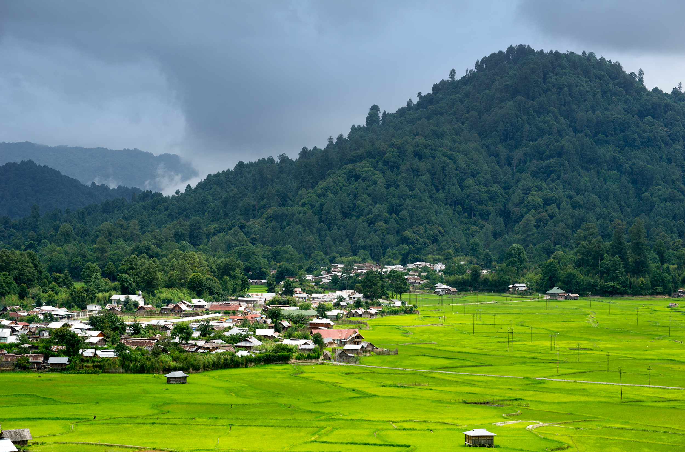

About: Ziro Valley is known for green landscapes and Apatani culture.
Best Time: March – October
Weather: Pleasant and cool
Route: Reach Itanagar → Travel 110 km
✈ Airport: Donyi Polo Airport
🚆 Railway: Naharlagun Station
🚌 Bus: Itanagar Bus Stand
If you already visited, help others and us 🙌